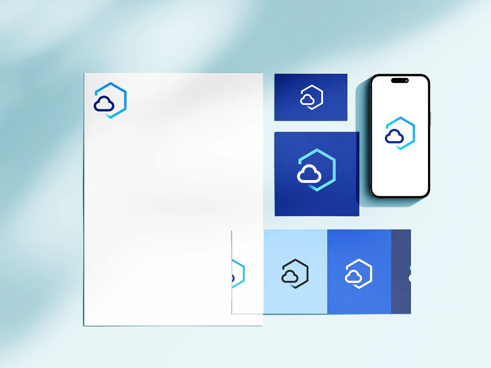
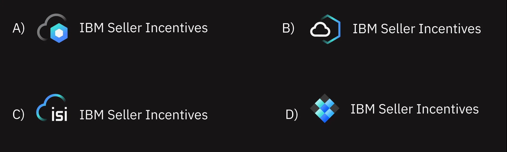
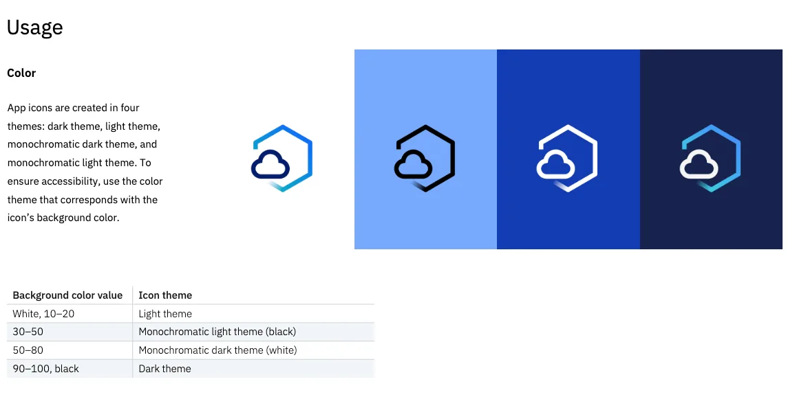

IBM Seller Incentives — App Icon Redesign
Designing the official application icon for IBM Seller Incentives — a global internal platform used by 70,000+ IBM Sellers and Sales Managers worldwide — and getting it approved into IBM's official Design Library.

Context
IBM Seller Incentives is one of IBM's most business-critical internal platforms — the system that calculates, tracks, and communicates compensation for the global sales force. When the application migrated to a cloud-based environment, it exposed a significant gap: the existing app icon was a relic from the early 2000s, with no relationship to IBM's current visual system, and no recognition value in modern multi-app environments like IBM Watson Workspace or the internal app catalog.

I was responsible for the full icon redesign: from auditing IBM's App Icon Guidelines and brand governance requirements, through iterating on visual concepts, navigating the IBM Branding review process, and delivering an icon that was approved and published into IBM's official App Icon Library.
The icon appears as the primary visual identifier for a platform that directly touches compensation decisions for IBM's entire global sales organization. At this scale, visual clarity, brand alignment, and cross-surface legibility are not aesthetic preferences — they are functional requirements.
IBM Design Language Constraints
IBM's App Icon Guidelines are one of the most structured icon systems in enterprise design. Every constraint exists for a reason — scalability, brand coherence, and trust across a global software ecosystem. Working within them required understanding the system deeply before attempting to express anything new. Key constraints I worked within:
- Grid system: icons are built on a precise construction grid with defined safe zones, trim areas, and live areas — no element may extend to the edge.
- Corner radius formula: IBM uses a mathematically derived corner radius (approximately 22% of the icon's bounding box) — not a visual approximation.
- Color palette: restricted to IBM's core brand colors — IBM Blue (#0f62fe), white, and a limited set of approved product-family tones. No custom or off-brand colors.
- Metaphor rules: abstract metaphors are preferred over literal representations. The icon should evoke the product's purpose without illustrating it.
- Stroke and fill: IBM icons use defined stroke weights. Mixing fill and outline within a single icon is not permitted.
- Multi-size legibility: the icon must remain recognizable at 16px (notification badges), 32px (app lists), and up to 512px (marketing/App Store contexts).
The Challenge
The legacy icon had no visual relationship to IBM's current design language — wrong colors, no grid compliance, and a literal illustration style that didn't translate to modern contexts. The challenge was to create a new icon that communicated the product's core function (sales performance, incentives, and calculation) using IBM's abstract metaphor language — without creating something so abstract it lost meaning for daily users who relied on the icon to navigate quickly across multiple internal tools.
{kind=link}
Discovery & Insights
Before generating any concepts, I conducted a structured audit to understand both the brand governance system and the product's identity signals. This included:
- IBM App Icon System audit: reviewed the full IBM icon library to understand the visual grammar — which metaphors were used for which product categories, how color was applied to product families, and what differentiated high-quality approvals from rejected submissions.
- Product identity analysis: IBM Seller Incentives sits at the intersection of finance, performance, and sales. The icon needed to feel at home in that category — adjacent to analytics and reporting tools, not to collaboration or communication products.
- User context: the icon is used primarily in app launchers and notification areas, where users scan quickly. Recognition speed at small sizes was weighted equally with aesthetic quality at large sizes.
- Stakeholder alignment: before exploring visual directions, I aligned with the product team on which conceptual territory was in-scope — what the icon should evoke and what it should avoid.
Approach & Iteration
I explored multiple concept directions simultaneously, each grounded in a different visual metaphor for sales performance and incentives: upward momentum, calculation and precision, reward and recognition, and data-driven insight. For each direction, I built on IBM's construction grid — geometry first, meaning second.
Each iteration was evaluated against three criteria before being shared for feedback: grid compliance, legibility at 16px and 512px, and conceptual fit with IBM's icon vocabulary for financial and analytics products. Directions that passed internal review were presented to stakeholders in a structured vote, with rationale for each option rather than a preference poll.
{kind=link}

IBM Branding Review Process
Submitting to IBM's Branding team is not a formality — it is a structured governance process with specific acceptance criteria. The review evaluated grid compliance, color accuracy, metaphor appropriateness, and consistency with the existing product family. I prepared the submission package with precise documentation: construction grid overlays, color values in IBM's token format, multi-size previews, and a written rationale tying the metaphor to the product's functional identity.
The process required two rounds of feedback. The first round flagged a minor stroke weight inconsistency at small sizes. The second submission was approved without further changes — a signal that the work was executed to IBM's standard, not just visually acceptable.
Accessibility
App icon accessibility is often treated as an afterthought, but at IBM's scale it has measurable impact. The icon was validated across:
- Light and dark themes: IBM's internal platforms support both. The icon was tested in both contexts to ensure the background fill and foreground elements retained sufficient contrast.
- Size range: legibility was verified at 16px, 24px, 32px, 64px, and 512px — covering notification badges through App Store marketing assets.
- Monochrome rendering: some IBM contexts render icons in single-color or reduced-color modes. The icon's form remains identifiable without relying on color alone.
{kind=link}

Final Result
The final IBM Seller Incentives app icon fully adheres to IBM Design Language guidelines while clearly communicating the product's identity within IBM's financial and analytics product family. It is legible across all required surfaces and sizes, supports both light and dark themes, and contributes to a more coherent internal application ecosystem for a globally distributed sales organization.
{kind=link}
In IBM's Official Design Library
The IBM Seller Incentives app icon is now part of IBM's official App Icon Library — the canonical reference used by designers and developers across IBM's global product ecosystem. Being included in the library means the icon passed IBM's most rigorous design governance process and is treated as a first-class asset of IBM's brand system, available to every team that builds on or alongside Seller Incentives.